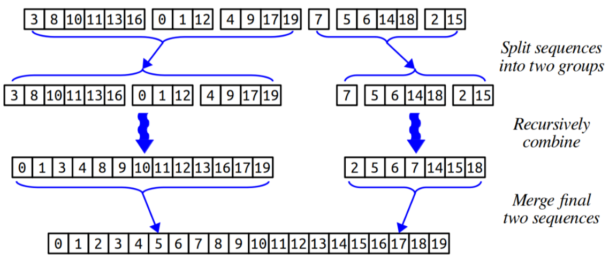

Due Friday, February 11 at 10:30 am
- Submissions received by the due date receive a small on-time bonus.
- All students are granted a pre-approved extension or "grace period" of 24 hours after the due date. Late submissions are accepted during the grace period with no penalty.
- The grace period expires Sat, Feb 12 at 10:30 am, after which we cannot accept further late submissions.
- All due dates and submission times are expressed in Pacific time.
You are permitted to work on this assignment in pairs.
This assignment is all about big-O notation and efficiency. We’re aware that you’ll be working on the midterm over the weekend, and accordingly we’ve calibrated this assignment to be considerably shorter than normal.
This assignment has two parts:
- Big-O Analysis: We’ve given you a number of functions, access to their source code, and a run-time plotter. Your task is to determine their big-O time complexities.
- Matchmaker Revisited: In Assignment 4, you explored how to pair people off. What happens if you need to pair a lot of people up? Just how quickly can you do it?
- On Efficiency: This week has been about designing efficient algorithms. What happens if you overprioritize efficiency?
- Combine: You have a large collection of sorted sequences you want to assemble into a single sorted sequence. We could just toss everything together into a list and sort it from scratch, but there’s a faster way to combine multiple sorted sequences.
As usual, we suggest making slow and steady progress. Here’s our recommended timetable:
- Work on the midterm over the weekend. Realistically, we don’t expect you to start this until Monday. 😃
- Aim to complete the big-O analysis questions by Tuesday.
- Aim to complete Matchmaker Revisited and Rethinking Efficiency by Wednesday.
- Aim to complete Combine by Thursday.
Assignment Logistics
Starter Files
We provide a ZIP of the starter project. Download the zip, extract the files, and double-click the .pro file to open the project in Qt Creator.
Resources
Be sure to read our Guide to Big-O Notation, which has a ton of information and worked examples you can use to learn more about big-O notation.
Getting Help
Keep an eye on the Ed forum for an announcement of the Assignment 5 YEAH (YEAH = Your Early Assignment Help) group session where our veteran section leaders will answer your questions and share pro tips. We know it can be daunting to sit down and break the barrier of starting on a substantial programming assignment – come to YEAH for advice and confidence to get you on your way!
We also here to help if you get run into issues along the way! The Ed forum is open 24/7 for general discussion about the assignment, lecture topics, the C++ language, using Qt, and more. Always start by searching first to see if your question has already been asked and answered before making a new post.
To troubleshoot a problem with your specific code, your best bet is to bring it to the LaIR helper hours or office hours.
Part One: Big-O Analysis
In this problem, we’ve provided you a list of thirteen C++ functions. Your task is to determine the big-O runtimes of each of those functions with respect to n, where n is either the numeric input int n or the size of the input Vector or Queue.
Those functions are broken down into five smaller groups:
-
Printing Chip: Five functions that draw graphical representations of letters or words to the con- sole. Increasing n in these functions increases the size of the letters or words.
-
Counting Triples: A function that finds all triples of values in a
Vectorthat add up to a particular total. -
Printing Cycles: Three functions that take in a sequence, then repeatedly move the first element of the sequence to the end, like the Looper example from lecture.
-
Recursive Mysteries: Two simple recursive functions that compute values based on their inputs.
-
Maximum Single-Sell Profit: Two functions that solve a problem pertaining to historical stock market values.
To help you determine the big-O runtimes of these functions, we recommend that you do a mix of the following:
-
Hand-analyze the code. Following the principles we outlined in lecture, read over the code and determine how much work you think each step does.
-
Consult the documentation. Operations on containers like the
VectorandQueuedo not all take time O(1), and the specific amount of work required depends on which operations are performed. We’ve documented the amount of work done by each recursive call online on our Stanford C++ Library Documentation. -
Run time trials. Our provided starter files contain code that will run the functions on inputs of different sizes, providing both a qualitative plot and quantitative runtime information.
More concretely, here’s what you need to do:
Edit the file BigOAnswers.txt with the big-O time complexities of the functions defined in BigOFunctions.cpp. You do not need to justify your answers.
Some notes on this problem:
-
You’re not expected to write or modify any code for this problem. Instead, take the provided code as it’s given to you and analyze its efficiency.
-
The last two functions you can run in the time tests, “
fastMaxWeightMatching” and “Combine,” are for the next two parts of the problem. Don’t analyze these functions just yet - in one case, it's a function you'll write later! -
Remember that raw timing data can be “noisy,” in the sense that other processes running on your computer can skew the results. If you see any unusual spikes in your plots, it might simply indicate that your machine was busy doing something else when you ran the test.
-
On some computers, the very first timing data point can appear much higher than the ones that come immediately after it. If that happens, just disregard that data point. (This is due to how the computer caches parts of your code that run frequently – come talk to us if you’re curious why!)
-
The effects predicted by different big-O runtimes become more pronounced and more accurate for larger input sizes. For smaller inputs sizes, you may see growth rates that don’t align with the actual big-O runtime.
-
Make sure that, for each function, you can explain its big-O time complexity both analytically (by reading the code and seeing what it does) and empirically (based on the runtime plots). If you’re unsure about something, come ask us!
Part Two: Matchmaker Revisited
In Assignment 4, you implemented a pair of functions for finding matchings in a group of people. You might have noticed that your algorithms for finding maximum-weight matchings and perfect matchings slowed down pretty significantly as the number of people increased. That’s in large part because there are so many possible ways of trying to pair people off that any solution that works by trying to explore them all will take a long time. For example, if you have a group of 50 people, each of whom could be paired with each other person, there are a staggering 27,886,995,605,342,342,839,104,615,869,259,776 possible matchings to try when looking for a maximum-weight matching. Even with all the computing power in the world there’s simply no way we could check all of them.
And yet, there are many applications in the real world where we need to assign pairs to groups of fifty or more people. During COVID, several CS classes suggested assignment partners in classes of 200 or more people. The famous Stanford Marriage Pact assigns matches to groups of over 8,000 people. And some algorithms for assigning routes to package delivery drivers need to find matches in groups of sizes in the hundreds, every day. Doing so will require an approach other than just a brute-force recursive search.
Fortunately, there is a way to do this. A series of papers written in the early 1960s introduced a much faster algorithm for computing perfect and maximum-weight matchings. That algorithm, called the blossom algorithm, became the basis for a family of fast maximum matching algorithms that have made it possible to feasibly find maximum matchings in a variety of settings.
We have provided you with a function
Set<Pair> fastMaxWeightMatching(const Map<string, Map<string, int>>& links);
that computes a maximum-weight matching using one implementation of the blossom algorithm. This function is dramatically faster than brute force, and your first task is to figure out its big-O runtime.
Of course, there’s a catch. The code for this algorithm was written here at Stanford in the 1980s and is fairly difficult to read (both because coding conventions have evolved since the code was written, and because the algorithm itself is exceptionally complicated). It would therefore be all but impossible to figure out the runtime simply by reading the code.
Instead, we’d like you to use our runtime plotter. We’ve set up the plotter so that it will run the function on a series of matching problems, each of which involves n people. We can promise you that the runtime of this function is O(nk) for some integer k that you’ll need to figure out.
Specifically, here’s what you need to do.
Answer each of the following questions in the file MatchmakerAnswers.txt.
Q1. What is the big-O runtime of the fastMaxWeightMatching function? Justify your answer by making reference to the runtime data.
Q2. One of the reasons big-O notation is useful is that it allows us to make predictions about runtimes that we haven’t observed. Based on the runtime numbers you’ve seen on your computer, how long would it take to find a maximum-weight matching in a group of 5,000 people? Justify your answer by making reference to both the runtime data you have for this function and the big-O runtime you came up with in Q1.
Q3. Estimate the largest value of n for which the fast algorithm, running on your computer, could find a maximum-weight matching in a group of n people in under 24 hours. Justify your answer by making reference to the runtime data.
Part Three: On Efficiency
This embedded ethics problem designed by the amazing Katie Creel.
As ethical and socially-conscious computer programmers, we know that many considerations other than speed and runtime are important in choosing the appropriate algorithm for a particular use. Dr. Gillian Smith, an associate professor at the Worcester Polytechnic Institute, identifies an interesting fallacy that computer scientists often fall into when applying algorithmic analysis techniques like Big-O analysis:
If it’s more efficient, it’s better. The quality of a program, independent of how people interact with it, should be evaluated only with respect to how well it minimizes cost.
The following case study illustrates the importance of supplementing efficiency and performance analyses with human-centric evaluation.
In 2006 the state of Indiana awarded IBM a contract for more than $1 billion to modernize Indiana's welfare case management system and manage and process the State's applications for food stamps, Medicaid and other welfare benefits for its residents. The program sought to increase efficiency and reduce fraud by moving to an automated case management process. After only 19 months into the relationship, while still in the transition period, it became clear to Indiana that the relationship was not going as planned. In particular here are some "lowlights" of the system's failures to provide important and necessary services for those in need:
-
"Applicants waited 20 or 30 minutes on hold, only to be denied benefits for 'failure to cooperate in establishing eligibility' if they were unable to receive a callback after having burned through their limited cellphone minutes."
-
"Applicants faxed millions of pages of photocopied driver’s licenses, Social Security cards, and other supporting documents to a processing center in Marion, Indiana; so many of the documents disappeared that advocates started calling it “the black hole in Marion" […] Any application missing just one of tens to hundreds of pieces of necessary information or paperwork were automatically denied."
-
"By February 2008, the number of households receiving food stamps in Delaware County, which includes Muncie, Indiana, dropped more than 7 percent, though requests for food assistance had climbed 4 percent in Indiana overall." (Quotations from this article written by Virginia Eubanks.)
In light of these failures, the State of Indiana cancelled its contract with IBM and sued the company for breach of contract, stating that the company had failed to deliver a system that was supposed to help people get the services they needed. In court, IBM argued that they were not responsible for issues related to wait times, appeals, wrongful denials, lost documents, etc. as the contract only stated that a successful system would succeed by reducing costs and fraud. IBM’s system did reduce costs, but did so by denying people the benefits they needed. In light of this, we would like you to consider some questions.
Answer the following questions in ShortAnswers.txt.
Q1. According to the contract that IBM struck with the state of Indiana, the criteria for optimization were improving efficiency of the overall welfare system and reducing fraud. Criteria for reducing wait times and wrongful denials were not included. However, wrongfully denying benefits has a huge negative impact on the citizens who rely on the system. If criteria like minimizing wrongful denials were not included in the contract, should engineers have included them in their optimization algorithm? Why or why not?
Q2. Imagine that after completing CS106B you are hired at IBM as an engineer working on this system. How might you have approached designing and setting the goals of this system? How might you apply algorithmic analysis tools to build a system that achieved the desired goals? Could you do so in a way that avoids the severe negative impacts on users of the system that are outlined in the case study?
If you're interested in reading more about this case study, we highly recommend reading the linked article above. The author, Virginia Eubanks, also wrote a great book titled Automating Inequality that can make for interesting further exploration!
Part Four: Combine
Suppose you have several lists of numbers, each of which is already in sorted order. You want to combine those lists together into one giant list, also in sorted order. How should you do this?
One approach would be to ignore the fact that we know these lists are already sorted and to do the follow- ing: create a giant Vector holding all the numbers, then sort it with mergesort in time O(n log n). This works, but by harnessing the fact that the input sequences are already sorted we can improve on this.
If you’ll recall, mergesort works by recursively breaking the input array down into a bunch of tiny sequences, then using the merge algorithm to combine all those sequences back together into one giant, sorted sequence. Here, we already have the input broken down into smaller sorted sequences, and so we just need to do that second step of mergesort, merging things back together, to finish things off.
Let’s imagine that we have k sequences that collectively have n total elements in them. We can follow the lead of mergesort to sort those sequences together using an algorithm called combine:
-
Split those k sequences apart into two groups of roughly k / 2 sequences each. (It doesn’t matter how many elements are in each of the sequences, just that the number of sequences in each group is roughly the same).
-
Recursively combine each of those groups of sequences. You now have two sorted sequences, one made by combining the sequences in the first group, and one made by combining the sequences from the second group.
-
Using the merge algorithm from class, merge those two large sequences together into one final overall sequence.
Here’s an example illustrating how to combine six sorted sequences (k = 6) with twenty total elements across them (n = 20) into one giant sorted sequence. For convenience, these are sequences of integers.

This diagram should hopefully look familiar; it’s really similar to the one we saw for mergesort in class.
With a little bit of creativity you can prove that the runtime for this approach is O(n log k). In the case where you have a small number of sequences (low k) with a large total number of elements (large n), this can be dramatically faster than resorting things from scratch! For example, if n is roughly one million and k is, say, ten, then this combine algorithm will be roughly ten times faster than a regular mergesort.
Milestone 1: Implement Combine
Your task is to implement a function
Vector<DataPoint> combine(const Vector<Vector<DataPoint>>& dataPoints)
that takes as input a list containing zero or more lists of data points, then uses the above algorithm to combine them into one giant sorted sequence. The DataPoint type is a defined in Demos/DataPoint.h as follows:
struct DataPoint {
string name; // Name of this data point; varies by application
double weight; // "Weight" of this data point. Points are sorted by weight.
};
You can assume that the sequences of data points provided to you are sorted by their weight fields from lowest to highest, and your resulting sequence should also be sorted by weight from lowest to highest. Here’s the first milestone you need to reach:
Milestone 1 Requirements
-
Add at least one custom test to
Combine.cppusingSTUDENT_TEST. We recommend doing this first, since it’s a great way to confirm you understand what’s being asked of you. - Implement
combinefromCombine.cppusing the following recursive strategy:- Split the list of sequences into two groups with roughly the same number of sequences.
- Recursively combine each of those groups together, forming two sorted sequences.
- Use the merge algorithm to merge those resulting sequences into one overall sequence. (The merge algorithm was described in our lectures on searching and sorting; you’ll need to code this up yourself.)
- Test your code thoroughly to make sure that it works correctly.
Some notes on this problem:
-
A key step in solving this problem will be implementing the merge algorithm. The version of merge that we outlined in class worked by repeatedly removing the first elements of the sequences to merge. Be careful – as you saw in Problem One, removing from the front of a
Vectordoes not take time O(1), and if you remove too many elements from the front of aVector, you may end up exceeding the O(n log k) runtime. -
There may be multiple
DataPointsthat have the same weight. If that’s the case, you should keep each of them in the resulting sequence, and you can break ties in weights arbitrarily. -
The sequences to combine aren’t required to have the same size. Some of them may be gigantic. Some of them might be empty.
-
It’s legal to combine a list of zero sequences. What do you think you should return in this case?
-
The C++ standard libraries contain a function
std::mergethat implements the merge algorithm from class. For the purposes of this assignment, please refrain from using that function. We’re specifically interested in seeing you code this one up yourself.
Milestone 2: Ensure Combine Runs Quickly
The testing framework we’ve provided you this quarter is great for checking whether the code you’ve written works correctly. Now that we’ve started talking about efficiency, you’ll also need to make sure that your code has the proper big-O runtime. As a refresher, the code you write here should run in time O(n log k), where n is the total number of elements across all the lists and k is the number of lists.
What, exactly, does O(n log k) mean? It might help to imagine that n is allowed to vary, while k stays constant. If you have a small value of k, then log k is also small, and as n varies you’ll get a plot of a straight line with a small slope. As k increases, you’ll see the slope of that line starting to increase, but not by much because log k grows extremely slowly. In particular, if you look at values of k that grow exponentially quickly (say, k = 1, 4, 16, 64, 256, 1024), the slope of the lines you see should appear to increase by some fixed rate.
To help you confirm that you have indeed met this runtime bound, we’ve bundled a runtime plotter along with the starter files. You can select it using the “Time Tests” button at the top of the demo app and then choosing the “Combine” option. You’ll then see a graph of the runtime of your combine function over a range of different values of n and k. The coordinate axes are on a standard linear scale, and the values of k that are shown go up by a factor of four on each run. So take a look a the runtime plots you’re getting back. Are they consistent with your function running in time O(n log k)?
If you have questions about this, you’re welcome to stop by the CLaIR (the Conceptual LaIR, which runs in parallel with the regular LaIR queue) to talk through these questions with one of the section leaders. Once you have a sense of what you think you should see, confirm that your runtime plots match what’s expected. If so, great! If not, take a look back at your code. Think about where the inefficiencies might be coming from.
Milestone 2 Requirements
Ensure your code runs in time O(n log k), where n is the total number of elements and k is the number of different sequences.
-
Choose the “Time Tests” option from the top menu, then choose “Combine.”
-
Run the time tests and look at the plots you get back. Is what you’re seeing consistent with a runtime of O(n log k)? If so, great! If not, use those plots to form a hypothesis of what the runtime is, then go back to your code and see if you can spot the source of the inefficiency. Don’t forget to run the regular tests whenever you make a change to the code; you need to both have efficient code and correct code.
Submission Instructions
Before you call it done, run through our submit checklist to be sure all your ts are crossed and is are dotted. Make sure your code follows our style guide. Then upload your completed files to Paperless for grading.
Partner Submissions:
- If you forget to list your partner you can resubmit to add one
- Either person can list the other, and the submissions (both past and future) will be combined
- Partners are listed per-assignment
- You can't change/remove a partner on an individual submission
Please submit only the files you edited; for this assignment, these files will be:
BigOAnswers.txt(Don't forget this one!)MatchmakerAnswers.txt(Don't forget this one!)ShortAnswers.txt(Don't forget this one!)Combine.cpp
You don't need to submit any of the other files in the project folder.
If you modified any other files that you modified in the course of coding up your solutions, submit those as well. And that’s it! You’re done!
Good luck, and have fun!